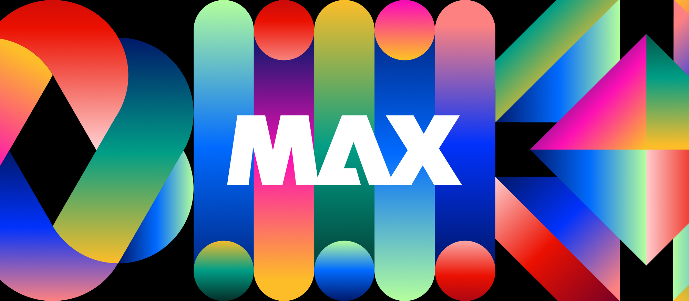
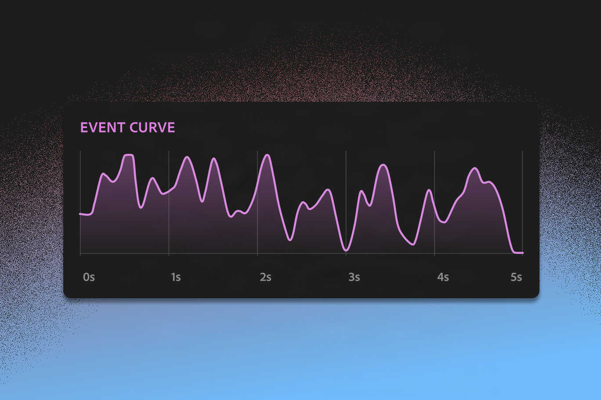
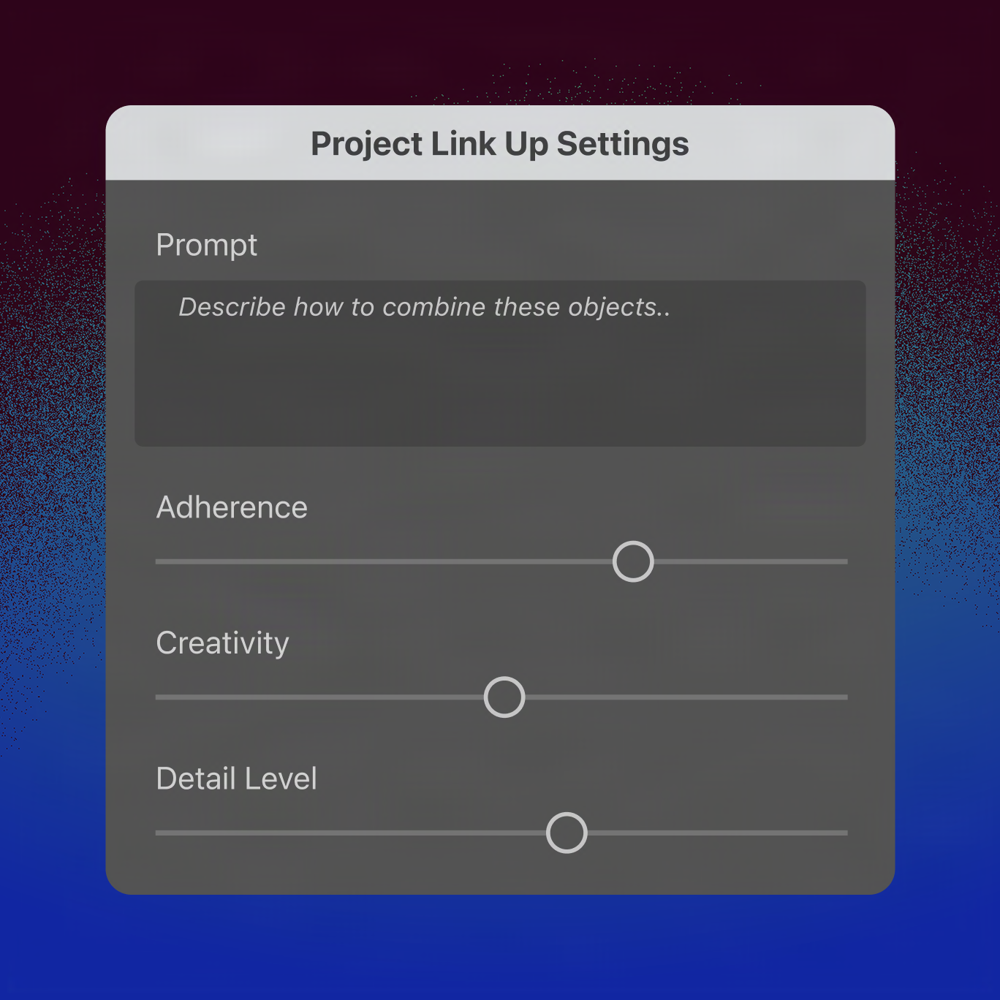
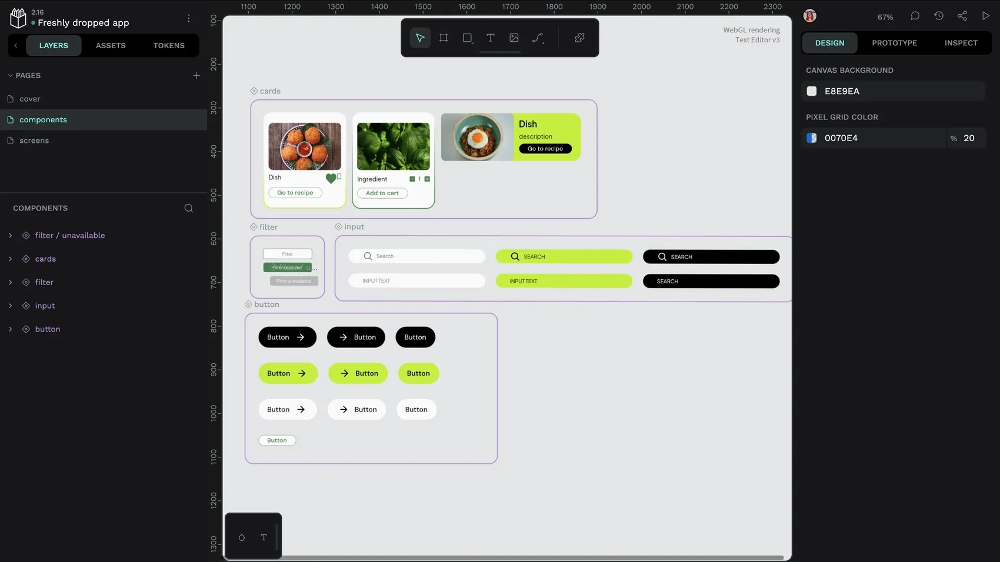
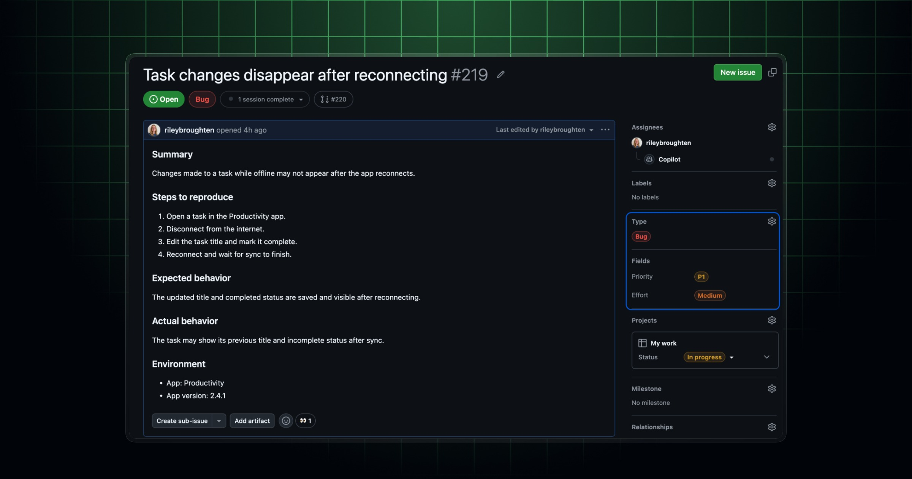
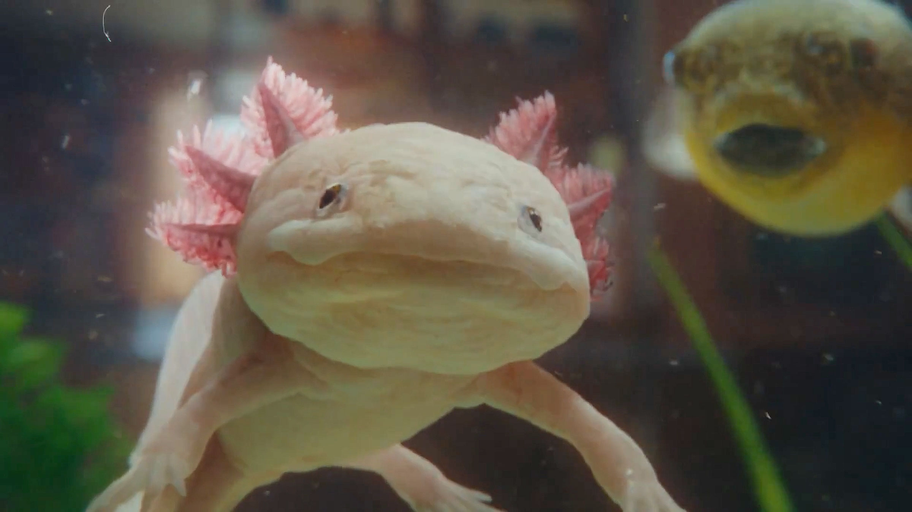

今天的主线不是“AI 又能多做一种内容”，而是软件开始争夺创作流程里更具体的控制权：事件何时发生、声音如何随镜头移动、重复编辑能否保留原生图层、agent 该不该放行一个动作。Adobe MAX Sneaks 给了十个研究方向，但它们仍是 Sneaks，不是已经进入套餐的功能；Vercel 的 decision model 倒是已经能按明确价格调用。
另一条线更朴素：Penpot 和 GitHub 都在补“结构”。设计系统要变成机器可读的基础设施，个人项目也要有类型、优先级和时间字段。生成越来越便宜之后，结构化输入、可编辑输出、权限与回读才是团队真正会持续付钱的部分。

Adobe 在 MAX 2026 展示十个研究项目：Scene Sweep、Screen Test、Live Set 处理跨镜头与生成场景；On Cue、Sound Bender 管时间与声音；Deep Brush、Sight Span、Hands On、Rinse Repeat、Link Up 则把图像编辑重新拉回直接操控与可编辑结构。官方同时开了 Adobe Labs Playground，但这四个重点项目页目前仍只让用户登记“实验开放时通知”。
这不是十项产品更新。先看方向就够了：Adobe 正把 prompt 从唯一入口降级成一层输入，曲线、手势、画布、原生 Photoshop 工具和可编辑矢量重新回来。套餐、credits、失败扣费都没有，采购表里今天应该写“研究预览”，别写“MAX 2026 已上线”。

On Cue 允许手绘一条 event curve，或从视频、音乐中提取时间信号，再决定闪光等事件何时发生；Sound Bender 则从完成混音中按描述分离声音，在二维交互画布里探索变体，并让声音运动匹配视频。
这是今天最值得动效团队记住的组合。它把“像这首歌一样有节奏”变成可编辑的时间数据，把声音从素材库文件变成随叙事变化的对象。两项都还没开放实验，没法判断同步精度、分轨污染和版权边界；但下一次做 AI hero video，至少先把节拍、事件峰值和镜头动作画成同一条时间轴，不要只写一段形容词。

Link Up 读取拖放手势里的意图，让被拖入场景的对象自动适配透视、比例与风格，结果仍是可编辑矢量；Rinse Repeat 会捕捉局部编辑，再用 Photoshop 原生工具把同一套操作适配到图像其他区域，因此后续还能继续改。
两个项目都在修生成式工作流最烦的断点：结果看起来对，却没有操作历史和结构。这里的判断比“生成更准”重要——只有原生矢量、图层和工具链回来，团队才有版本、审阅与返工空间。现在同样只是 Sneak，别把概念演示当成 Photoshop 已有菜单。

Penpot 把 design infrastructure 定义为一层机器可读资产：组件、tokens 与文档不仅给设计师看，还要通过开放接口、API 和共享标准被工程与自动化消费。文章进一步串起 DTCG JSON、代码可读的组件映射、CI、MCP、webhook、自托管和角色权限。
厂商文章当然在替 Penpot 的开放与 self-hosted 路线辩护，不能当中立横评。但问题提得很准：AI 只有在输入是结构化资产时才不必猜；一个设计系统如果不能输出 token、触发变更、限定角色并回到代码，就仍然只是漂亮文件夹。读完先审自己的组件命名和 token export，比立刻换工具有效。

GitHub 把 issue types 与 fields 正式开放到个人账号仓库。默认类型是 Bug、Task、Feature，可建最多 25 个类型；默认字段包含 Priority、Effort、Start date、Target date，可建最多 25 个文本、数字、日期、单选或多选字段，并支持把字段固定到特定类型。Projects、批量更新、REST、GraphQL 与 webhook 都能读取这些结构。
独立设计师、开源组件库和小型前端项目终于不用靠 label 冒充数据模型。别一次建满 25 个字段：先用 Type + Priority + Effort + Target date 形成最小闭环，能被 API 回读、能进 Project 视图，再决定要不要加更多治理。
Vercel AI Gateway 已接入 google/gemini-decision-1。它不是写文案的模型，而是对文本、图片、音频、视频或 PDF 返回 Boolean probability、choice 或 score，用来路由请求、检查规则、筛选 agent 工具与排序结果；调用会进入 Gateway logs 和 budgets。AI SDK 7 支持全部这些模态，TypeSafe-compatible API 与 Decisions API 目前只支持文本和图片。
模型页当前列出输入 $0.10 / 1M tokens、输出 $0。便宜不代表可以把决策权直接交出去：设计工程最适合先用它做“是否满足组件约束”“是否需要人工复核”“候选视觉排序”这类有审阅出口的门控。还没实测，先不下结论；概率阈值、误杀成本和回退规则必须和界面一起设计。

来源：Stash 文章https://www.stashmedia.tv/electric-theatre-collectives-ambitious-amphibian-adventure/｜原片：Vimeohttps://vimeo.com/1245792412｜客户：Netflix Brand Creative Studio｜代理：Mother｜导演：Vania & Muggia｜VFX / 后期：Electric Theatre Collective
这支 90.8 秒品牌片把一只沉迷《Bridgerton》的 axolotl 从水族箱带进客厅。开场先用自然光、玻璃反射、水草和城堡摆件建立可信的微缩日常，角色近景靠浅景深与极克制的面部动画出喜感；离开水箱后，湿润材质、身体重量和真实地面接触继续维持可信度，直到它爬上沙发，故事才完成从“宠物”到“观众”的身份切换。
片子没有靠快速 UI demo 或密集 3D 转场撑节奏，而是用尺度变化、表演和一条很清楚的欲望线讲完 Netflix 的平台主张。收尾突然切成高饱和粉色窄体大字 FIND THE THING YOU NEVER KNEW YOU NEEDED，再落红色 N；前面越像一支认真拍的动物短片，最后这句越有力。
产品片可以直接借它的叙事骨架：先让角色在真实使用情境里暴露一个具体欲望，中段只让产品成为满足欲望的媒介，最后再用一句品牌命题回收。别先拍功能菜单。飞书发布采用 Vimeo player iframe，同时保留 Stash 与 Vimeo 链接，不额外堆独立视频封面。
Stash 11 月 11 日只新增一条，已升级为今日主卡。其后仍是昨天覆盖过的三条；这里保留状态，不把旧 feed 包装成四条新消息。
核验说明：Adobe MAX / Adobe Labs、Penpot Blog、GitHub Changelog、Vercel Changelog / model page、Stash WordPress API / 文章页与 Vimeo player 于 2026-11-12 回读。正文 7 张配图原始宽度为 1368–2400px，已逐张目视检查；飞书视频 iframe 与文档、群消息状态以最终 CLI 回读为准。